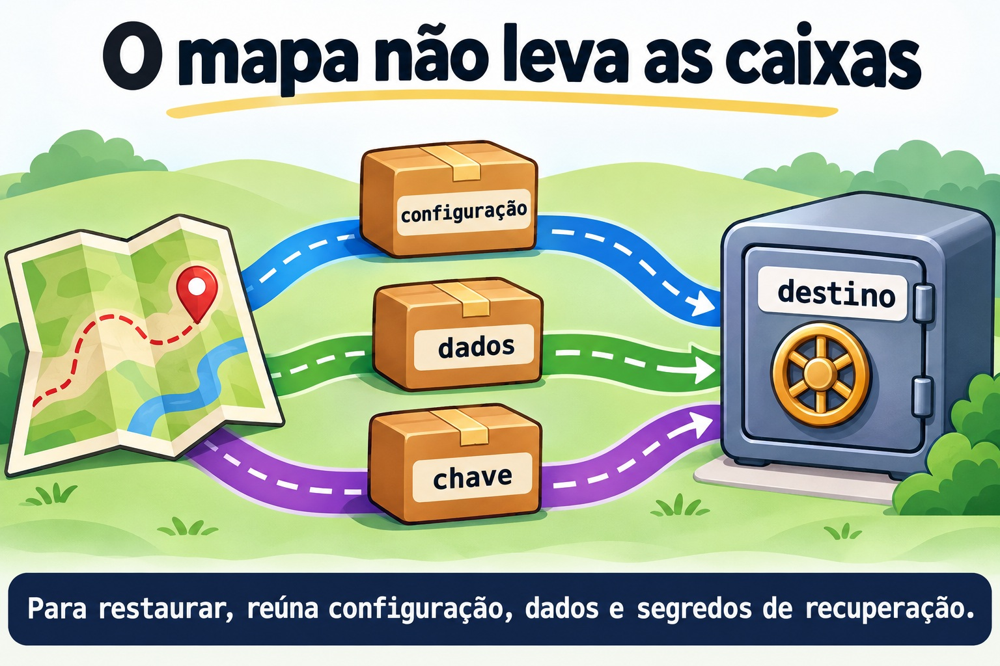
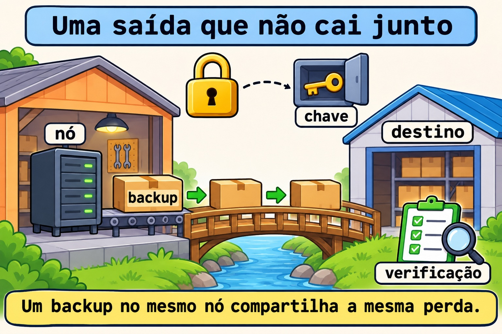

Aula 20.6 · Backup e restauração: provar o conteúdo
O coração desta aula: recuperar uma página conhecida e conferir identidade e local.
| Ficha | Plano de trabalho |
|---|---|
| Módulo | M20 · NethServer 8 por dentro, aula 6 de 7 |
| Quando | Semana 28 |
| Ao final | preparar um destino SMB e provar uma restauração |
| Pré-requisitos | Wiki e TLS da 20.4; student com sudo na 202 |
| Duração | 90–120 minutos |
| Snapshot | base m20a4-tls/m20a4-cliente202; saída m20a6-backup nas duas VMs |
Antes de começar
A 240 precisa do cluster, da Wiki de teste e do certificado da 20.4. Na 202, o navegador e a CA ficam disponíveis na conta student. As bases são m20a4-tls na 240 e m20a4-cliente202 na 202, se foram salvas. Caso contrário, prepare 20.1, 20.2 e 20.4; a 20.5 não é necessária.
Use o guia M20 para os IPs reais de gestão. O destino será criado agora na 202, sem servidor anterior. Se há Samba personalizado nessa VM, pare e reconcilie a bancada; este exercício não substitui outra configuração.
Somente a Wiki fictícia participa da restauração. Comandos administrativos NS8 rodam dentro da 240 como root; os demais, na 202 como student. Nenhum laboratório foi executado durante esta revisão.
1 · Aquecimento
- O arquivo do cluster contém todas as páginas?
- Uma senha SMB abre também o conteúdo cifrado do backup?
- O status de sucesso identifica o texto que voltou?
2 · Por que importa
Backup termina quando você consegue recuperar o conteúdo certo. O exercício grava um marcador, faz backup, muda a página e recupera o estado anterior.
Ponte Windows
O mapa informa onde estão as caixas e como abri-las; não contém o conteúdo delas. O backup cifrado do cluster e os dados das aplicações têm papéis distintos.
3 · Modelo mental


Uma agenda relaciona destino, retenção e instâncias. No destino, os dados são agrupados por tipo e UUID. O ID curto do painel pode mudar numa restauração; o UUID identifica o conjunto recuperado.
4 · O essencial
| Peça | O que guardar |
|---|---|
| Arquivo do cluster | cópia cifrada e senha em custódias separadas |
| Repositório | dados por instância e chave de cifragem original |
| Transporte SMB | servidor, share e credencial próprios |
| Prova | marcador, snapshot, UUID e nó |
Rocky × Debian
A 240 executa o backup; a 202 guarda o destino SMB fora desse nó. Se ambas usam Ceph, esse destino não protege contra a perda do Ceph.
Decida 1 · O status está verde
A. Apagar a instância imediatamente. B. Copiar somente o arquivo do cluster. C. Identificar snapshot, UUID e prova de conteúdo antes de substituir.
5 · Lab guiado
Passo 1 · Criar uma prova recuperável
Palpite: Que texto diferencia o backup de uma Wiki vazia?
Na 240, após sudo -i, leia o inventário criado na 20.2. Confira ID, UUID e nó pelos valores reais, sem copiar nomes de exemplos.
m20_ver_wiki() {
[ "$(hostname -s)" = ns8-1 ] && [ "$(id -u)" -eq 0 ] || return 1
. /root/m20-lab/operador.env || return 1
[ -n "$MODULE_ID" ] && [ -n "$MODULE_UUID" ] || return 1
runagent -l
redis-cli --raw HGET cluster/module_uuid "$MODULE_ID"
runagent -m "$MODULE_ID" podman ps
}
m20_ver_wikiNa 202, como student, gere o marcador uma vez. Se o arquivo já existe, preserve-o para continuar o mesmo ensaio.
m20_marcador() {
[ "$(hostname -s)" = debian-lab ] && [ "$(id -un)" = student ] || return 1
install -d -m 0700 "$HOME/m20-lab" || return 1
if [ ! -e "$HOME/m20-lab/wiki-marker.txt" ]; then
printf 'M20_BACKUP_%s\n' "$(cat /proc/sys/kernel/random/uuid)" > "$HOME/m20-lab/wiki-marker.txt" || return 1
fi
cat "$HOME/m20-lab/wiki-marker.txt"
}
m20_marcadorNo navegador da 202, entre como student local da Wiki. Crie a página m20_restore com o marcador exibido. Na ACL, dê leitura anônima somente a essa página fictícia; mantenha o resto privado. Confira o marcador em janela privada.
Saída esperada: Página e diário identificam o mesmo marcador, UUID e nó.
Verifique: A existência da página precisa anteceder o backup escolhido.
Passo 2 · Preparar Samba na 202
Palpite: O destino tem configuração anterior que precisa ser preservada?


Preencha CLIENT_IP com o IP real da 202 e NS8_IP com o da 240. Execute na 202 como student. O bloco aceita apenas ausência de configuração Samba ou o arquivo padrão intacto do pacote; serviço ativo ou configuração alterada fazem parar antes de qualquer substituição.
CLIENT_IP=""
NS8_IP=""
m20_preparar_smb() {
[ "$(hostname -s)" = debian-lab ] && [ "$(id -un)" = student ] || return 1
[ -n "$CLIENT_IP" ] && [ -n "$NS8_IP" ] && [ "$CLIENT_IP" != "$NS8_IP" ] || return 1
ip -o -4 addr show | awk '{split($4,a,"/"); print a[1]}' | grep -Fx "$CLIENT_IP" || return 1
if systemctl is-active --quiet smbd; then
printf '%s\n' 'Samba já está ativo; confira a configuração existente.'
return 1
fi
if [ -e /etc/samba/smb.conf ]; then
sudo cmp -s /etc/samba/smb.conf /usr/share/samba/smb.conf || { printf '%s\n' 'Configuração Samba personalizada; pare e reconcilie a bancada.'; return 1; }
fi
[ ! -e "$HOME/m20-samba" ] && [ ! -e "$HOME/m20-backup" ] || return 1
sudo systemctl mask smbd.service nmbd.service || return 1
sudo apt install -y samba smbclient || return 1
umask 077
install -d -m 0700 "$HOME/m20-samba" "$HOME/m20-backup" || return 1
sudo cp -a /etc/samba/smb.conf "$HOME/m20-samba/smb.conf.original" || return 1
cat > "$HOME/m20-samba/smb.conf.candidate" <<EOF
[global]
workgroup = WORKGROUP
server role = standalone server
security = user
map to guest = Never
interfaces = lo $CLIENT_IP
bind interfaces only = yes
hosts allow = 127.0.0.1 $NS8_IP
hosts deny = ALL
disable netbios = yes
smb ports = 445
server min protocol = SMB2_02
[m20backup]
path = /home/student/m20-backup
valid users = student
read only = no
browseable = no
guest ok = no
create mask = 0600
directory mask = 0700
EOF
testparm -s "$HOME/m20-samba/smb.conf.candidate" || return 1
sudo install -o root -g root -m 0644 "$HOME/m20-samba/smb.conf.candidate" /etc/samba/smb.conf || return 1
}
m20_preparar_smbUma máscara de serviço ainda não instalado pode gerar um aviso de unit ausente; confira a máscara antes de continuar. A comparação verifica apenas o modelo de configuração fornecido pelo pacote, não a integridade do backup.
Só depois de o bloco terminar sem erro, defina uma senha SMB exclusiva para student no pedido próprio do comando. A conta Unix já existe; não troque sua senha de login.
sudo smbpasswd -a studentDepois da confirmação da senha, inicie o serviço e prove escrita, leitura e remoção de um arquivo fictício. O comando smbclient também pede a senha sem gravá-la no histórico.
sudo systemctl unmask smbd.service
sudo systemctl enable --now smbd.service
printf 'M20_SMB\n' > "$HOME/m20-samba/prova.txt"
smbclient //127.0.0.1/m20backup -U student -c "put $HOME/m20-samba/prova.txt prova.txt; get prova.txt $HOME/m20-samba/retorno.txt; del prova.txt"
cmp "$HOME/m20-samba/prova.txt" "$HOME/m20-samba/retorno.txt"
sudo ss -ltnp '( sport = :445 )'Saída esperada: Share privado gravável por student, escuta somente nos endereços configurados.
Verifique: A 240 deve alcançar TCP 445 da 202. Se uma política existente bloquear, autorize apenas essa origem no lab; não apague o firewall.
Passo 3 · Cadastrar o destino e executar o backup
Palpite: O snapshot pertence à Wiki que será substituída?
No painel NS8, abra Backup and restore. Defina a senha do arquivo cifrado do cluster e guarde-a fora das VMs. Em Add destination, escolha Windows file share: servidor = IP real da 202, share = m20backup, usuário = student. Digite a senha SMB somente no formulário.
Para um destino vazio, deixe a chave de cifragem de dados ser gerada. Registre sua custódia pelo mecanismo do painel; ao reutilizar um destino, a chave original é obrigatória.
Crie a agenda m20-wiki-test incluindo somente a DokuWiki fictícia. Execute Run backup now, espere a tarefa terminar e anote destino, horário, UUID e snapshot disponível na aba Restore.
Saída esperada: Snapshot da instância certa aparece para restauração.
Verifique: Validação do destino e conclusão do backup são duas provas. Sem snapshot identificável, não substitua a aplicação.
Passo 4 · Guardar o mapa e mudar a página
Palpite: O backup do cluster substitui os dados da aplicação?
Baixe o backup cifrado do cluster pelo navegador da 202 e mantenha uma cópia fora da 240. Guarde senha desse arquivo, senha SMB e chave de dados em custódias separadas. Não inclua esses valores no diário de evidências.
Depois do backup confirmado, troque somente o conteúdo de m20_restore por M20_DEPOIS_DO_BACKUP. Confira numa requisição nova que o texto novo aparece e o marcador antigo desapareceu.
Saída esperada: Você distingue os dois estados antes de restaurar.
Verifique: Anote a hora da mudança para não escolher um snapshot posterior por engano.
Passo 5 · Restaurar a Wiki de teste
Palpite: A substituição remove dados atuais?
Na aba Restore, selecione o tipo e o UUID registrados e o snapshot anterior à mudança. Escolha o nó 240. Marque Replace existing app apenas depois de confirmar que a instância existente é a Wiki fictícia deste exercício.
Aguarde a tarefa completa. O ensaio substitui dados atuais por um estado anterior; não instale outra Wiki manualmente para esconder uma falha. Confira a rota e o certificado do nó após a operação.
Saída esperada: Uma única instância volta ao snapshot escolhido.
Verifique: TLS pertence ao proxy do nó. Restaurar a Wiki não distribui certificados a outro nó nem substitui a CA da 202.
Passo 6 · Provar conteúdo e identidade
Palpite: Que evidência fecha o restore?

Na 240, liste novamente os agentes. Preencha NEW_MODULE com o ID real da Wiki restaurada. A função compara o UUID e altera somente o ID curto no inventário, preservando os outros campos.
runagent -l
NEW_MODULE=""
m20_registrar_restore() {
[ "$(hostname -s)" = ns8-1 ] && [ "$(id -u)" -eq 0 ] || return 1
[[ "$NEW_MODULE" =~ ^dokuwiki[0-9]+$ ]] || return 1
. /root/m20-lab/operador.env || return 1
OBS_UUID=$(redis-cli --raw HGET cluster/module_uuid "$NEW_MODULE") || return 1
[ -n "$MODULE_UUID" ] && [ "$OBS_UUID" = "$MODULE_UUID" ] || return 1
runagent -m "$NEW_MODULE" podman ps || return 1
M20_NEXT=$(mktemp /root/m20-lab/operador.env.XXXXXX) || return 1
sed "s/^MODULE_ID=.*/MODULE_ID=$NEW_MODULE/" /root/m20-lab/operador.env > "$M20_NEXT" || return 1
[ "$(grep -c '^MODULE_ID=' "$M20_NEXT")" -eq 1 ] || return 1
chmod 0600 "$M20_NEXT" || return 1
mv -f "$M20_NEXT" /root/m20-lab/operador.env
}
m20_registrar_restoreNa 202, preencha NS8_IP caso tenha aberto outro terminal. Faça o pedido novo pelo nome, com TLS válido; o arquivo só é analisado se curl terminar com sucesso.
m20_provar_restore() {
[ -n "$NS8_IP" ] || return 1
M20_MARKER=$(cat "$HOME/m20-lab/wiki-marker.txt") || return 1
[ -n "$M20_MARKER" ] || return 1
curl --retry 10 --retry-delay 1 --retry-all-errors --max-time 10 --fail --silent --show-error --cacert "$HOME/m20-pki/ca.crt" --resolve "wiki.lab.test:443:$NS8_IP" 'https://wiki.lab.test/doku.php?id=m20_restore' --output "$HOME/m20-lab/wiki-restored.html" || return 1
grep -F -- "$M20_MARKER" "$HOME/m20-lab/wiki-restored.html" || return 1
if grep -F 'M20_DEPOIS_DO_BACKUP' "$HOME/m20-lab/wiki-restored.html"; then
printf '%s\n' 'Ainda é o estado posterior ao backup.'
return 1
fi
printf '%s\n' 'Marcador restaurado; confira UUID e nó no diário.'
}
m20_provar_restoreSaída esperada: Marcador antigo presente, mudança posterior ausente, UUID e nó conferidos.
Verifique: Registre somente resultados realmente observados; status de tarefa não substitui conteúdo.
Decida 2 · O Ceph ficou indisponível
A. Exigir dados e mapa recuperáveis fora desse storage. B. Usar apenas o snapshot da VM. C. Declarar que o share da VM 202 é independente.
6 · Quebre e conserte
Quebra 1 · Credencial do destino errada
Sintoma: Num formulário ainda não salvo, digite uma senha SMB errada uma vez.
Investigação: Confira IP, share, conta e resultado da validação.
Causa: A autenticação do transporte falhou.
Conserto: Corrija a senha no formulário; mantenha a chave de dados existente.
Prevenção: Separe credencial SMB e chave de cifragem.
Verifique: A validação correta permite um backup novo identificável.
Quebra 2 · Ponto no tempo errado
Sintoma: Selecione outro snapshot na tela, sem confirmar restauração.
Investigação: Compare o horário com a criação do marcador e a mudança posterior.
Causa: A seleção não corresponde ao conteúdo esperado.
Conserto: Volte ao snapshot comprovado antes de confirmar.
Prevenção: Anote marcador e snapshot juntos.
Verifique: A seleção final representa o estado anterior à mudança.
Quebra 3 · Pedido para o destino errado
Sintoma: Numa cópia do teste da 202, use 127.0.0.1 em --resolve.
Investigação: Confira destino forçado, nome e certificado.
Causa: O pedido não chegou à Wiki restaurada.
Conserto: Reponha somente o IP real da 240 no teste.
Prevenção: Associe o resultado ao ponto de observação.
Verifique: Nome, TLS e marcador passam no mesmo pedido.
7 · Armadilhas
- Não use prune/forget para corrigir uma listagem incompreendida.
- Não gere outra chave sobre um destino que contém dados.
- Não copie senhas para o diário.
- Não execute duas cópias independentes do mesmo UUID em clusters diferentes.
- Não restaure snapshots antigos da VM como limpeza da aplicação.
8 · Quiz
- O arquivo do cluster substitui as páginas da Wiki?
- Por que o marcador antecede o backup?
- Qual identificador separa instâncias do mesmo tipo?
- O que falta se as duas VMs usam o mesmo storage?
- Qual prova fecha o restore?
9 · Folha de bolso
runagent -l
runagent -m "$MODULE_ID" restic-wrapper --show
date --iso-8601=secondsO wrapper é consultado no nó, com o ID atual da instância. Não instale outro Restic para reproduzir o motor do NS8.
Flashcards: mapa, dados e segredos têm funções distintas.
10 · Checklist e fechamento
- [ ] SMB preparado e candidato validado.
- [ ] Backup e snapshot identificados.
- [ ] Mapa do cluster fora da 240.
- [ ] Marcador antigo recuperado; mudança posterior ausente.
- [ ] UUID e nó correspondem ao ensaio.
Reboot de conferência: numa janela da 240, reinicie pelo painel ou console. Depois repita a prova na 202. Confira também que o share continua disponível após reiniciar a 202.
Salve m20a6-backup nas VMs 240 e 202 pelo guia, após parar tarefas e conferir o estado. Essa é a base opcional da 20.7. Os snapshots não substituem o backup de aplicação.
Último exercício: descreva como recuperar apenas a Wiki e como trataria a perda de toda a VM. Para um NS8 novo, o ramo Restore cluster exige arquivo cifrado, senhas, chave de dados e destino acessível; não apague a 240 para simular esse ramo.
11 · Na vida real
Combine retenção e tempo de retorno com o responsável pelo serviço. Guarde uma cópia consistente dos dados e do mapa fora do storage compartilhado, com segredos recuperáveis por canal separado.
12 · Aprofundar quando quiser
Backup e restauração NS8 · Samba smb.conf
!explica Por que mapa e dados não são o mesmo backup? !feynman Explique a restauração como reconhecer uma caixa pelo conteúdo. !quiz Crie um status verde com o snapshot errado.
Gabarito comentado
Decida 1: C. Identifique o que será recuperado antes de substituir. Decida 2: A. Dados e mapa precisam sobreviver ao storage perdido. Quiz 1: Não; os dados ficam nos repositórios. Quiz 2: Para vincular o texto ao snapshot escolhido. Quiz 3: O UUID. Quiz 4: Uma cópia recuperável fora do storage compartilhado. Quiz 5: Pedido novo com TLS válido, marcador recuperado e UUID/nó corretos.